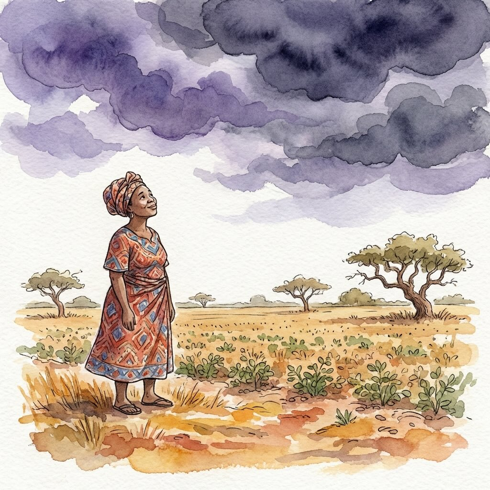
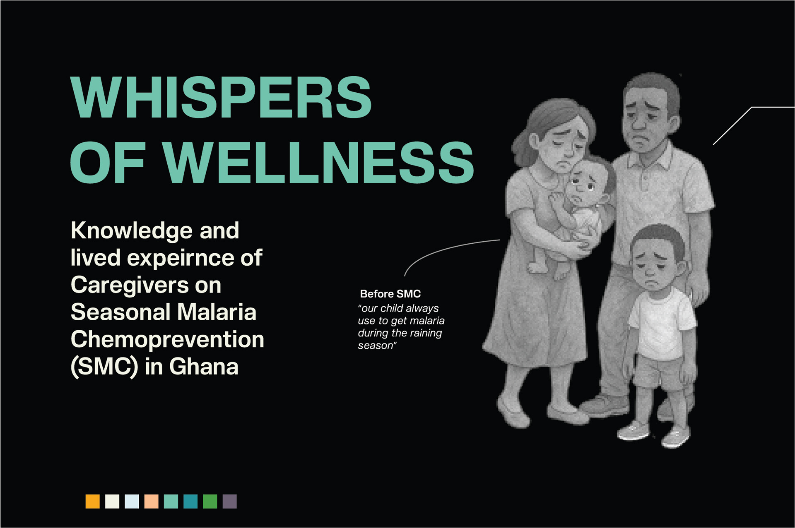

Category 01
Data Storytelling
Interactive, scroll-driven narratives that translate complex public health data into visual stories people can connect with and act on.

Heavy Weight on Small Shoulders
Master's Thesis — Scrollytelling Data Story
An interactive, scroll-driven web experience communicating the impact of Seasonal Malaria Chemoprevention (SMC) in West Mamprusi Municipal, Ghana's North East Region. Combines watercolor illustration, D3.js data visualizations (animated bar charts, isotype grids, mortality charts), and culturally grounded comparisons to translate abstract health statistics for low-literacy audiences.

Whispers of Wellness
Data Storytelling
A data story using visual and narrative techniques to explore health and wellbeing themes. Demonstrates how information design can be a tool for empathy, translating personal and public health data into visual narratives that foster understanding and connection.

Meaningful Strides: SMC in Sene West District
Data Storytelling
A visual narrative exploring the progress of Seasonal Malaria Chemoprevention in Sene West District, Ghana. Uses data-driven design to communicate public health intervention outcomes to diverse audiences — from health workers to community members.